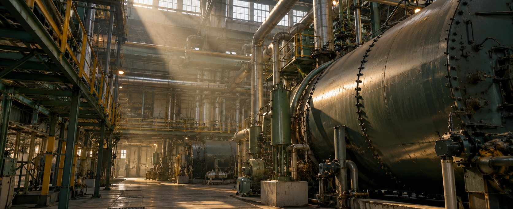
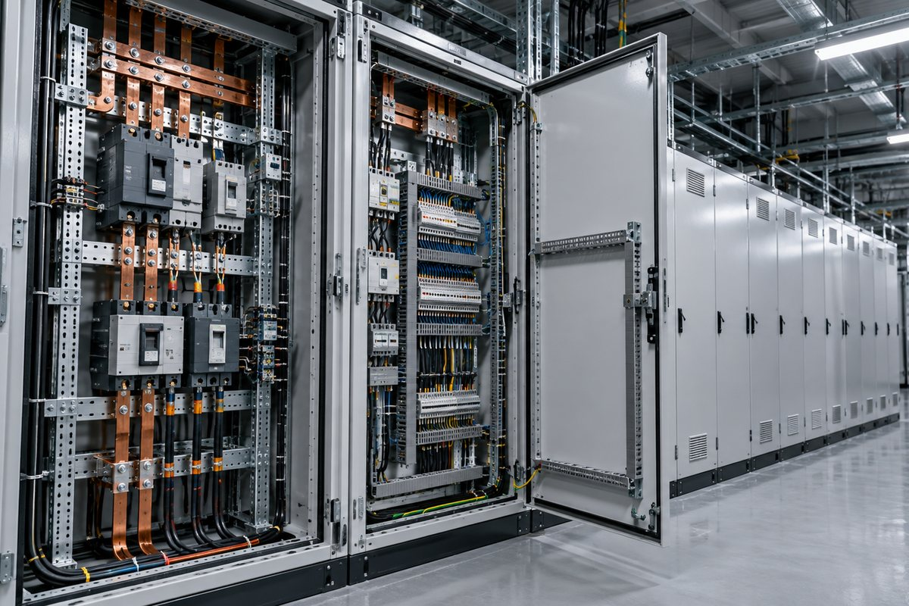
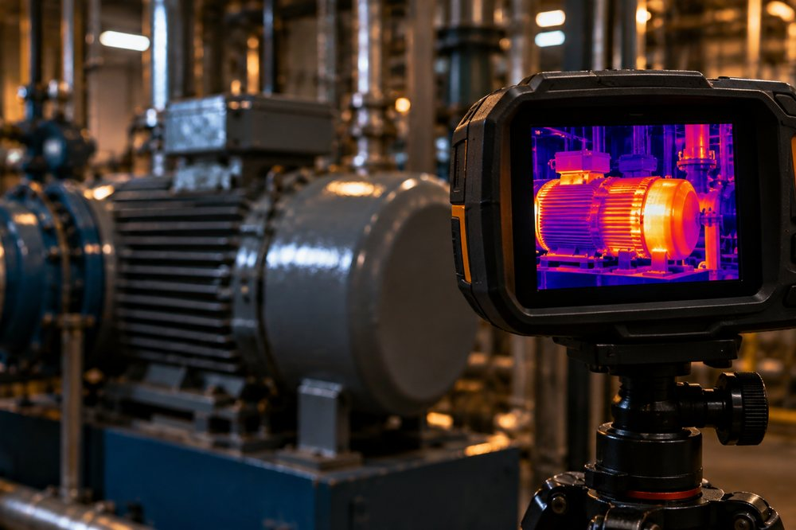
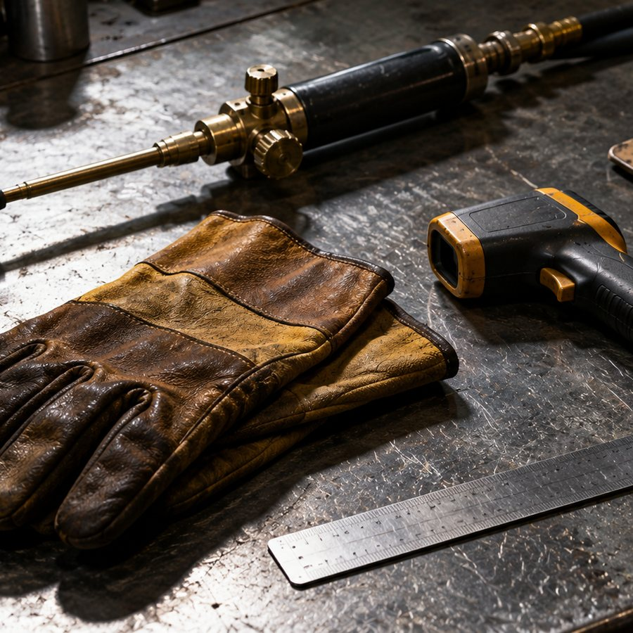
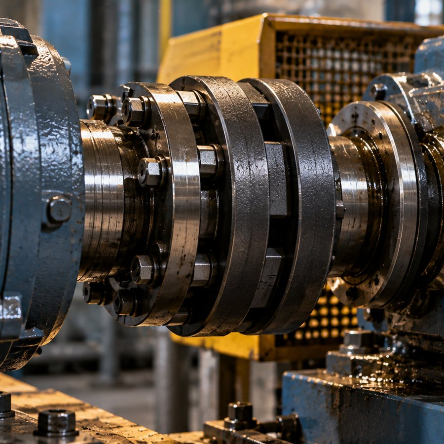
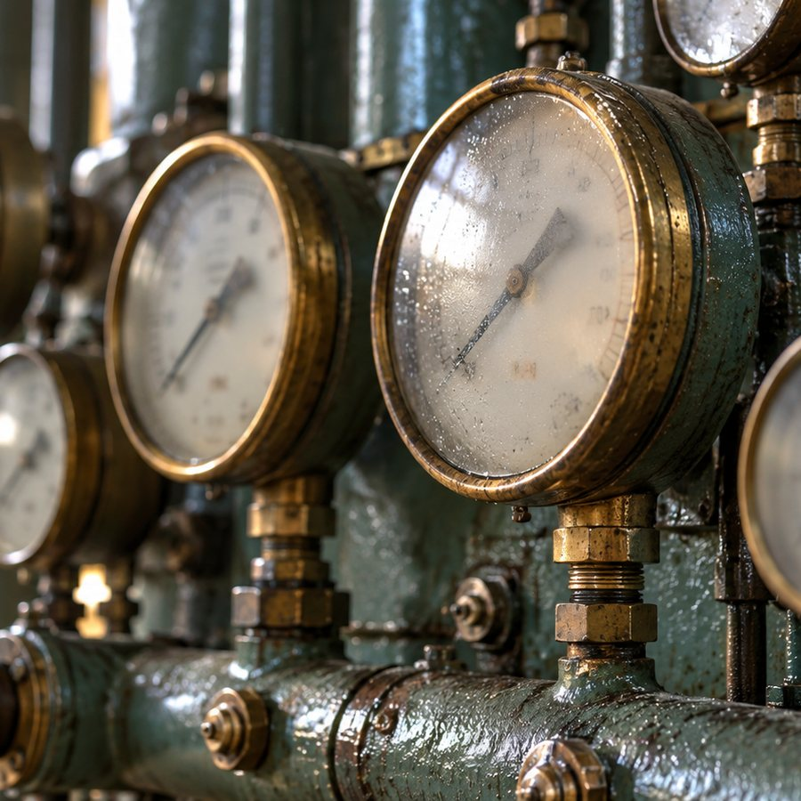
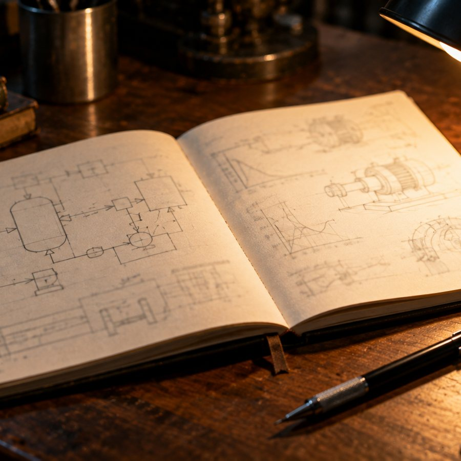
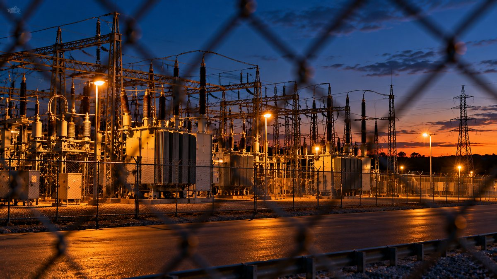

Risk control consultant / equipment breakdown
Lawrence Steven Cosentino Boilers, electrical plant and rotating machinery, assessed before they fail. Twenty years of it, from a submarine engine room to a consulting role at one of the largest insurers in the country.

Plant of the kind an equipment breakdown survey covers
The work
What a risk control consultant actually does
Equipment breakdown is the quiet half of property risk. Nothing has happened yet. The job is to walk the plant, find the thing that is going to fail, and say so in writing while there is still time to act on it.
- 01 Survey the plant Boilers and pressure vessels, switchgear and transformers, motors, chillers, lifts and production machinery. Condition, maintenance history, and whether the practices around the machine match the practices the machine needs.
- 02 Quantify the exposure What breaks, what it costs to replace, how long the business stops while it is replaced, and which single failure takes the most out of the operation. The loss that matters is rarely the most expensive part.
- 03 Write it so it gets done Recommendations an engineer and an accountant can both act on, and the follow through that turns a report into a changed work practice rather than a filed document.
Plant
The environments the work happens in
Switch rooms, boiler halls, roof plant and machine spaces. These are illustrative photographs of the kind of equipment an equipment breakdown survey covers, not photographs of any client site.







Roof plant at the end of a survey day
Record
Twenty years, in order
Every post below is on the machinery side of the work, and each one fed the next.
| Period | Role | Organisation and detail |
|---|---|---|
| Since 2022 | Risk Control Consultant | Travelers. Equipment breakdown: surveying plant and machinery, quantifying the exposure, and writing the recommendations that follow. |
| Earlier | Loss Control Specialist | Hartford Steam Boiler Inspection and Insurance Company. Recognised in 2019 for exemplary integrity. |
| Earlier | Senior Technician, Emergency Response Team | Global Foundries. |
| Earlier | Maintenance Supervisor | Gourmet Boutique. |
| 2006 to 2014 | Nuclear Electrician | United States Navy. Served aboard the submarines USS Jacksonville and USS Missouri. |
Never say you can't.
His own mottoCredentials
Training, and what it is for
He took a Bachelor of Science in Computer Information Systems in 2005, from the institution now called Manhattan University. The systems half of that degree is why the reports read like analysis rather than a checklist.
He holds Lean Six Sigma Green Belt and Black Belt certification from Villanova University, and is studying for a Master of Business Administration with a concentration in business analytics.
The Navy years are the foundation. Eight years as a nuclear electrician, much of it submerged, is an education in what happens when a system is not maintained and there is nowhere to go.
He is a member of VFW Post 2285, American Legion Post 979, and the Eastchester Veterans Foundation.
- Lean Six Sigma Black Belt, Villanova
- Lean Six Sigma Green Belt, Villanova
- BS Computer Information Systems, 2005
- MBA in progress, business analytics
- VFW Post 2285
- American Legion Post 979
- Eastchester Veterans Foundation
Contact
Get in touch
BasedOssining, New York.
Speaking and mentoringHe talks to veterans moving into engineering and insurance work, and to apprentices coming up through maintenance.
A note on this siteIt carries no photograph of him, because none is published anywhere he controls. The pictures here are of plant and equipment of the kind the work covers. A portrait goes in the day he sends one.